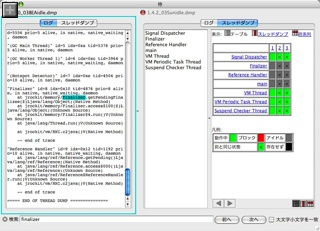
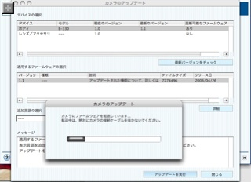
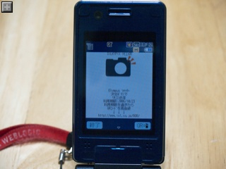
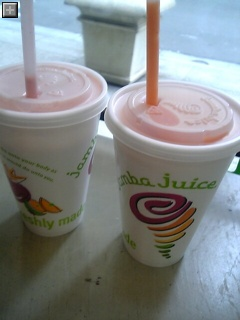
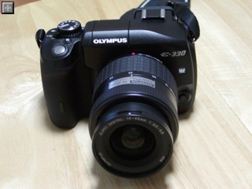
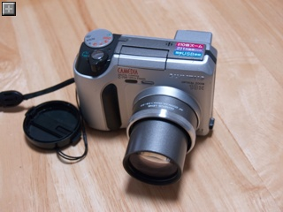
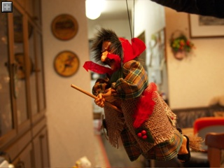
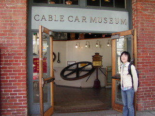
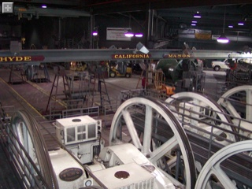

侍 2.0.5 公開

侍はタブ表示できる GUI の tail ユーティリティです。
タブ表示で複数のログファイルを一つのウィンドウで監視したり、インクリメンタルサーチしたりと開発時、運用時に重宝します。
Java/Swing で作られているので Mac OSX、Windows、Linux など Java が動作するあらゆるプラットフォームで動作します。
ちょっと変わった機能としては、CSV のグラフ化や、Java のスレッドダンプ、GCログの解析機能などがあります。
・侍2.0.5
今回内部的には大幅にリファクタリングされていますが目立った新機能はなく、パフォーマンス改善やバグフィクスが中心です。
侍2.0.4からの変更点
・検索機能のパフォーマンスを改善
・スレッドダンプ表示の改善
凡例をつけたり、runnable のスレッドを緑色で表示したりと微調整
・スレッドダンプ表示のパフォーマンス改善
内部的に html をファイルに書き出していたのをメモリベースにしました。
これによりスレッドダンプ表示の画面遷移の際に一瞬ひっかかりが生じていたのがなくなりました。
・WebLogic Server 9.x のスレッドダンプ名に対応
[ACTIVE] ExecuteThread: '2' for queue: 'weblogic.kernel.Default (self-tuning)'
といった長ーいスレッド名を
weblogic.kernel.Default[2]
てな感じに表示します。
・グラフをクリップボードにコピー出来なくなっていたのを修正
リファクタリング過程で失われていたのを修正。
・ログファイルがローテーションしたときにリフレッシュ出来ていなかったのを修正
ファイルサイズが減少すると頭から読み直します。
これも前できてたんだけどリファクタリングでバグが混入してました。
テストケースがイマイチだった模様。
・検索時の「大文字小文字を一致」の動作が逆になっていたのを修正
なんともしょぼいバグ・・・。

スレッドダンプ表示が見やすくなった侍2.0.5
起動はこちらから -> 
(要JDK1.4以降)
Olympus E-330 ファームウェア1.1リリース
買って早々に新しいファームウェアが登場。
・オリンパス、「E-330」のBモードでの拡大表示を改善
http://dc.watch.impress.co.jp/cda/dslr/2006/04/26/3718.html
さっそく Olympus Master を起動して USB で接続してアップデート！

でもまだ B モードを使いこなしてないので以前とどう違うのかよくわからん。
なんかボヤボヤしてたのがハッキリした感じ？
よくわからなくてもソフトウェアのアップデートってウキウキできます。
ハードウェアがそのままなのに機能が改善したり増えたりするのって得した気分。
デジカメのリモコンになる i アプリ
iアプリで赤外線I/FにアクセスするAPIが出来た、ってことで今持ってる携帯にはテレビのリモコンiアプリが内蔵されてます。
でもテレビのリモコン使うときにいちいちiアプリ立ち上げる暇あったらそこらへんに転がってる本職のリモコンを使った方がよほど便利なわけで、チャンネル戦争時の最終兵器とか、いたずらにしか使えませんでした。
そこで今回登場した赤外線iアプリはすごい！
なんとデジカメのリモコンになる！
・市川ソフト、携帯電話をデジカメのリモコンにするiアプリを無償公開
http://dc.watch.impress.co.jp/cda/other/2006/04/26/3722.html
まぁ仕組みとしてはテレビのリモコンと変わらないわけだけれども、別売りのリモコンを買わなくて済むので大変有用！
使用頻度も低いので必要なときにiアプリを起動するのでもほとんど問題ないでしょう。しかも無償で利用できます。
早速愛機のE-330用のリモコンデータをダウンロードして使ってみたけどバッチリ撮影できました。
室内で試した限りは5mくらい離れても十分届きました。
さて屋外ではどの程度届くのか？？？

増税について考えませんか - ズシリ度チェック
増税額を簡単に算出できるというサイトでチェックしてみました。
http://www.think-tax.jp/
収入に対する増税額の割合が「ズシリ度」という指標でグラフに現れるんだけど、トップレベルに近いズシリ度！
単純に増税が悪いこととは言わないけど、増税(手取り一ヶ月分に近い!!)に見合うだけのリターンは期待できないなぁ・・。
アナタのホームページにも増税額計算Flashを貼り付けられます！てことで貼り付けてみました。
なんで増税するのか、どこに問題があるか（という一意見）については以下のページから参照できます。
国民年金に未加入や保険料未納の人の分を源泉徴収で補填するってのは確かにおかしいと思う。
http://www.jtuc-rengo.or.jp/kurashi/zei/daizouzei/mondai.html
オリンパスのデジカメ講座を受講
土曜日にオリンパスが自社製カメラユーザ向けに開催している講座を受講してきました。
今回受講したのは「持っている方のためのデジタル一眼レフ使いこなし講座」
場所はやや遠い八王子市民会館でした。
http://www.olympus-zuiko.com/school/real/slr_master/
受講者は年配の方が多く、デジタルになる前から一眼レフに慣れている人もいるような雰囲気。
講義の内容はそこそこの初心者でもついていけるし、元々一眼レフに慣れている人でもデジカメならではの使いこなし方をしっかり習えるような形で良かったです。
今までわけもわからずパシャパシャとってた私もなんとかついて行けました。
露出はどうやって決定するか、ホワイトバランスはこう設定しろ、パソコンに取り込んだあとはどうやって補正するか、等々とても勉強なります。
iPhotoでいいんじゃないの？とインストールしていなかった、Olympus 製フォトレタッチソフト、Olympus Masterの紹介もありました。色々といじくるには iPhoto よりも便利そう。
こんなためになる講座を２０００円という格安料金で提供しているオリンパスに感謝！
八王子市民会館駐車場の桜
適正な露出を探してとったら以前に比べて桜色がしっかりと再現されました。

Jamba Juice 最高！
Jamba Juice はアメリカの街中、ショッピングモール、空港と至る所に見つけられるスムージー屋さん。
サンフランシスコでは通勤途中や、会社の目の前にもありました。
スムージーは日本でも一瞬流行ったけども、新鮮なフルーツをシャキシャキに砕いたおいしさはたまらない！

Jamba Juice のスムージー
ちなみにスムージーを頼むと「ブーストはどうする？」とか聞かれます。
これは無料で追加してくれる栄養素で、ビタミンとかプロテインとかその時の気分や体調に応じてオーダー出来ます。
健康に気遣うスムージー好きにはうれしいサービス。
最初無料と知らず「あ、いいっす」と断ってしまいました。なんともったいない・・・。
OLYMPUS E-330 購入！
ボーナスが入ったのでどーんとお買い物。
一眼デジカメの E-330！
・Olympus - E-330

念願の一眼デジカメ、E-330
こちらは超望遠デジカメの走りで、かれこれ５年のつきあいになる C-700。
画素数は211万と今時の携帯と変わらないか負けているけれども光学10倍ズームは未だ魅力的。
今後も緊急用、カジュアル撮り用として活躍してもらいます。

早速はウチのスティッチを比べ撮り。
どちらも目一杯解放して撮ってます。
C-700 で撮ったスティッチ
E-330 で撮ったスティッチ
C-700 の写真は拡大すると青い肌色（？）に混ざってブツブツと赤かったり黄色っぽかったりする部分があるのがちょっと妙。
調整次第かもしれないけど、E-330 の方が断然鮮やか。
同じ位置からとったけども、E-330 のほうが断然広角。
何よりもイイ感じなのは背景のボケ具合。
C-700 ではがんばって解放してもそこそこ背景がしっかりうつってしまう。
E-330 ではしっかりと背景がボケて被写体が際だってます。
お次は妻の実家の魔女。

同じく実家の陽気なコルク人形達
まだ全然使いこなせてないけれどもパシャパシャ撮るだけで良い感じです。
| OLYMPUS デジタル一眼レフカメラ E-330 レンズキット | |
Amazonで詳しく見る | |
Red Hat が JBoss を買収！
だそうだ。
TSS より。
・Red Hat Signs Definitive Agreement to Acquire JBoss
HP との関係がどうなるのかちょっと気になる。
知的財産Web検定
Yahooで著作権などの知識を検定してくれる「知的財産Web検定」ってのが始まりました。
・Yahoo! インターネット検定 - 知的財産Web検定
内容としてはオークションなどで著作権絡みのトラブルに合わないようにという主旨みたい。
入門編は無償で受検できます。
以前知的財産の研修を受けたこともあり無事満点でした！
ほんの４，５分で受検できて勉強になるのでお勧めです。

{kind=link}
{kind=link}
{kind=link}
{kind=link}
{kind=link}
{kind=link}
{kind=link}
{kind=link}
{kind=link}
{kind=link}
{kind=link}
{kind=link}
{kind=link}
Final Fantasy XII
を買った。
まだ始めたばかりでトマトのお化けも倒してないところ。
絵はとてもキレイなんだけれどもどうもまだストーリーが盛り上がらない。
カメラの操作がワンダと巨像とは反対方向になっていて向きたい方向を向くのが難しい。
操作に慣れる頃は面白くなっているかな？
オープニングははっきりいってスターウォーズ。
ドルビープロロジック対応なので前から後ろから音が飛んでくるのは良い！
google-coredumper
なんともそのまんまなネーミング。
プロセスを止めずに core を吐かせることができるらしい。
https://sourceforge.net/projects/goog-coredumper/
ビルド時に予めリンクしておかないといけないっぽい（？）。
{kind=link}
{kind=link}
{kind=link}
{kind=link}
モンスターズ・インク
を見た。
・モンスターズ・インク
今更な感じもするけれども、帰りの飛行機で妻のオススメにより鑑賞。
心温まるストーリーとちょっとしたどんでん返しで最後まで飽きの来ない展開でした。
さすがディズニーのアニメははずれがない。
Cablecar Museum へ
先日散歩がてらケーブルカーミュージアムへ行ってきました。
サンフランシスコ名物のケーブルカーの歴史や動作原理を知ることができるなかなか良い場所です。
なんだかんだと３回目くらいですが楽しめました。
ここはサンフランシスコに４本あるケーブルカーを動かしている動力源でもあり、実際にモーターでケーブルを動かしている様子をまじまじと確認できます。

入り口にて

Hyde,Powell,California,Masonの４つのラインすべてのケーブルがここに集約されてます
ケーブルの速度はは時速9マイルくらい
Google Maps:Washington St. と Mason St. の交わるとこにあります
{kind=link}
{kind=link}
無事帰国しました
フライトが遅れることもなく昨夕無事日本に到着しました。
かなり月並みだけど、日本に着いて思ったのは：
・花粉少ない
去年は花粉の多さで、成田空港に到着した瞬間、しかも空港内で花粉症デビューを果たしました。
今年は全然ムズムズしません。
・どこもキレイ
アメリカは結構道路がボコボコだけど、成田エクスプレスから見える田舎道はしっかり舗装されてました。
・電車の乗り心地が良い、静か
BARTに比べたら成田エクスプレスはメチャメチャ静かで揺れません。
BARTほどスピードは出てない気がするけど。
・洗い場ステキ
思う存分洗って思う存分湯船浸かれます。
・テレビがキレイ！
やっぱハイビジョンはいいなぁ。
とかとか。
困ったのは三ヶ月放置していた愛車のバッテリーがあがってエンジンがかからないこと。うーん。